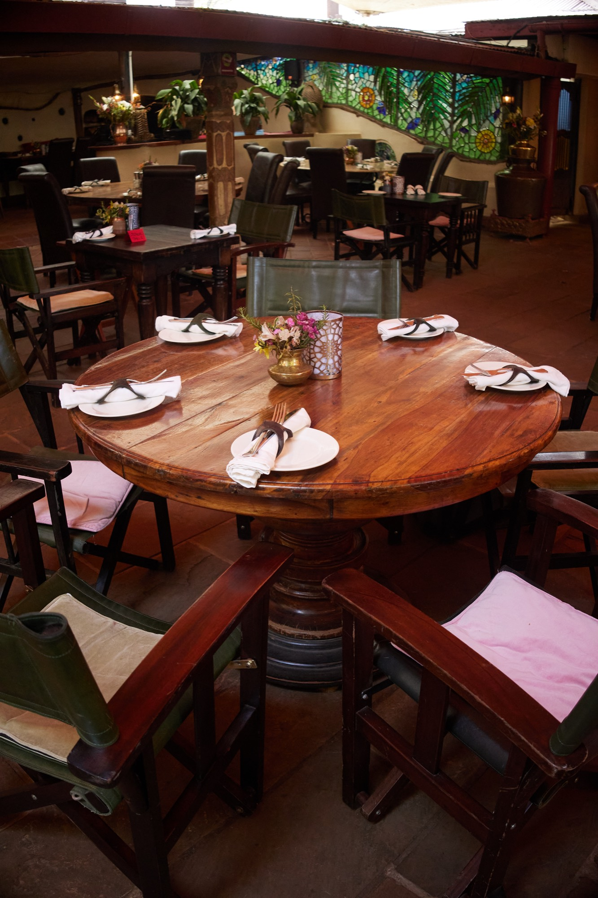

The fireplace
Beside the old bar, part of the original mud-and-wattle house that stood here long before the restaurant did.

Our Story
Talisman opened at the end of 2003. Nobody involved had ever run a restaurant.

How it began
Before the restaurant there were carpets. Sharly and Ian Cameron traded kilims, pillars and old carved furniture out of Afghanistan — and it was on one of those buying trips, sitting in Bashir’s shop choosing kilims, that Sharly noticed a small triangular object hanging above the door. A talisman, he told her. To ward off evil, and to bring good luck.
In June 2003 they were driving back into Karen after a trip to Tanzania, late in the evening, knowing the fridge at home was bare. One of them said it: if Esco Bar were still open, we could have gone there. The plot had been an Italian restaurant run by a man called Mauritzio, and it had closed that March. Neither of them had ever been restaurateurs. But Ian was a natural cook, Karen was short of good places to eat, and they had a warehouse full of pillars and carved pieces to set the scene with.
They promised each other five years, maximum. Sixteen-hour days, six days a week. It is still here more than twenty years later.
Years spent sourcing carpets, kilims, pillars and old carved furniture from Afghanistan — and travelling far enough to pick up a taste for a great many other kitchens along the way. It was in Bashir’s shop, choosing kilims, that Sharly first saw a talisman hanging above the door.
Driving home into Karen from Tanzania with an empty fridge, and a passing remark about a bar that had closed that March. The plot was free. The idea arrived fully formed.
The pillars and decorative pieces came out of storage and went straight into the rooms. Five years, they promised each other. Sixteen-hour days, six days a week.
English, Italian and French alongside Indian, Thai and Japanese — nouveau and genuinely exciting for Nairobi at the time. For the Japanese, Ian poached a very talented Kenyan chef from a city-centre restaurant, who also happened to know where to find the freshest tuna in town.
By the end of 2007 it had become something of a legend, and was ranked the city’s number one restaurant.
After the death of the plot’s owner, Chris Marshal, the Camerons bought the property and put it up for sale. Two regulars who did not want to lose the place — Satyan and Stue — bought it, and run it still.
Parts of the original mud-and-wattle house remain, believed to date back to Karen Blixen’s time — the fireplace beside the old bar, and the uneven wall on the way to the washrooms carrying its painted mural. Many of the original staff are still here too.
“I still love going there, and many of the original staff are there today to welcome one and all.”
Sharly Cameron · Co-founder
Beside the old bar, part of the original mud-and-wattle house that stood here long before the restaurant did.
On the way to the washrooms, carrying its painted mural. Nobody has ever been tempted to straighten it.
New owners since, and a kitchen that has grown — but the pillars, the carved pieces and the pace of the place are the ones it opened with.